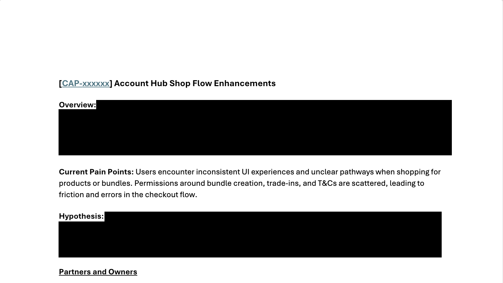
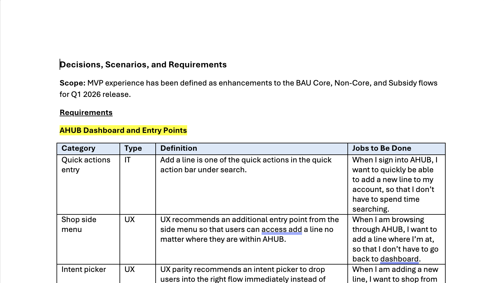
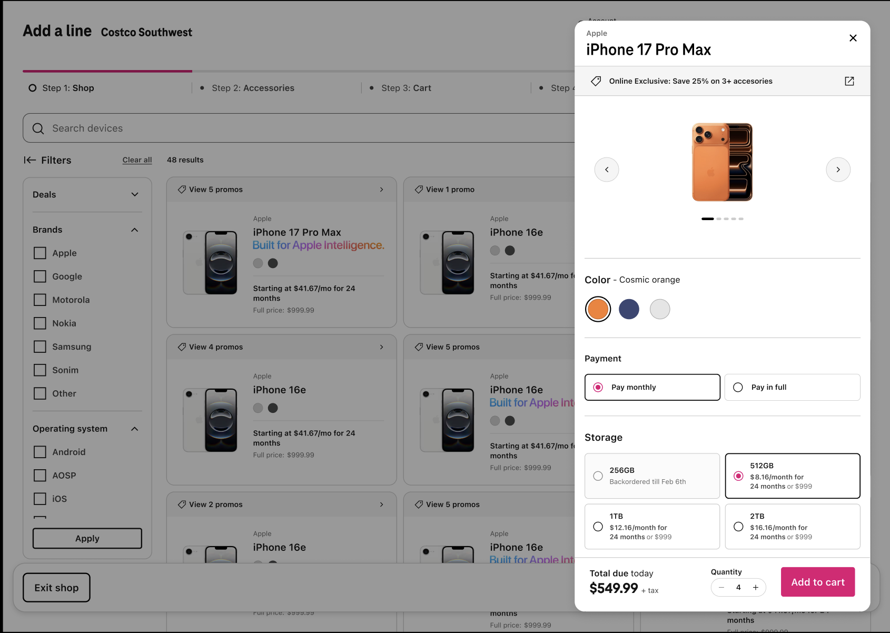
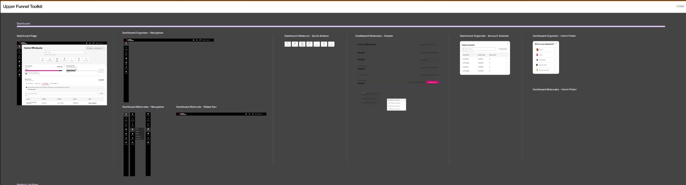
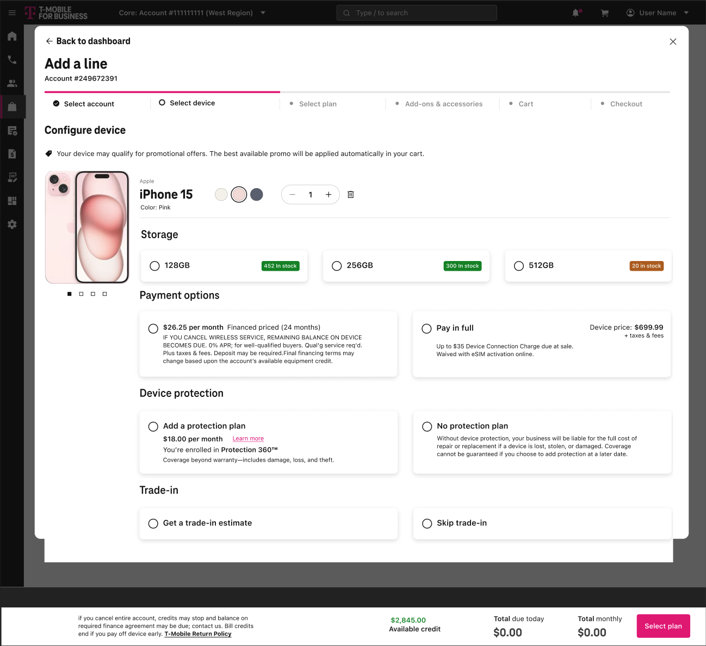
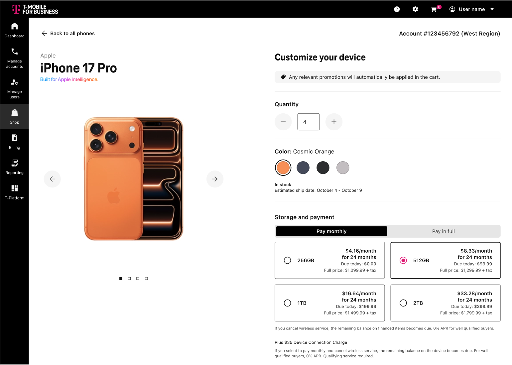
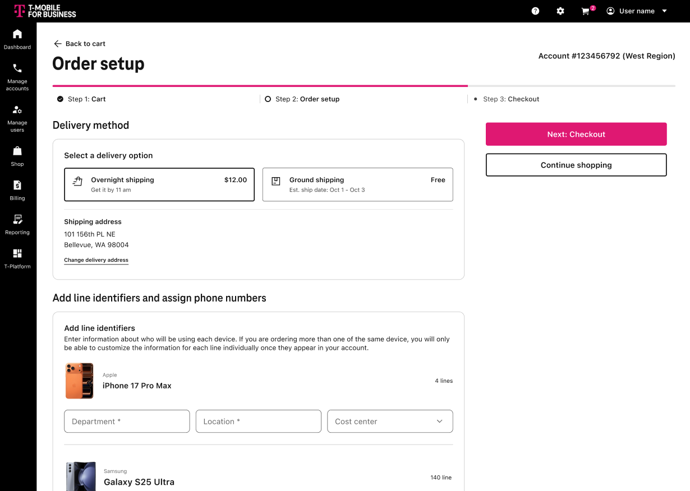
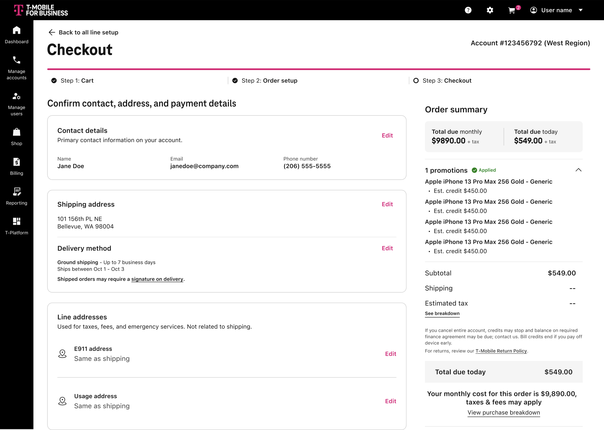

Case Study
Building the Foundation Nobody Asked For
This project came to me in crisis. One week before engineering handoff, the lead designer left. The designs I inherited had accumulated exploratory scope nobody had documented, requirements that hadn't been validated, and a research base too constrained to stand on. I had two weeks to ramp on a product space I didn't own — and I had to make calls that would determine whether this project shipped at all.
What followed was methodical. I audited the inherited work, built the framework that protected the team when pressure returned, and shipped three foundational flows instead of eight half-baked ones. The choice wasn't about being cautious. It was about being honest — with myself, with the org, and with the enterprise users who needed this to work.
The Situation
T-Mobile for Business needed a redesigned Shop experience inside Account Hub — the primary platform for enterprise customers to manage devices, lines, and accounts. The project had been IT-driven from the start. Design came in late — about two weeks before handoff — which meant technical decisions were already locked in and I was working within constraints I hadn't shaped.
When the lead designer left a week before engineering handoff, I stepped in. Not because it was my project — but because I was the only designer with cross-domain visibility across Hub, prior ecommerce experience, and established executive trust. Ramping someone new would have introduced risk we couldn't absorb.
Design had just gotten a seat at the table with IT. If we shipped eight half-baked flows, we'd poison that relationship before it even started. Shipping three solid ones was the only move that built trust.
IT-driven process — design joined two weeks before handoff
Inherited designs with undocumented, unvalidated exploratory scope
Prior research too constrained to serve as a foundation
One week to ramp on a product space I didn't own
Technical decisions already locked before design's involvement
Enterprise edge cases invisible in existing designs
The Work Nobody Saw
IT quickly realized the original timeline was unrealistic. Shop was deprioritized to #3 while engineering redirected elsewhere. We gained time — but lost active support. I used that window deliberately.
Audited all 8 flows
I reviewed the requirements for every inherited flow and mapped dependencies, completion states, and structural gaps the previous designs hadn't accounted for. The prior research had insights — but they were constrained to those specific designs, with no comparative context. There was no way to know if the designs were actually better. I knew from working alongside my VP what quality standards mattered. I knew the inherited designs weren't meeting them.
Separating what was essential from what had accumulated through scope creep was the first real deliverable. It wasn't a screen. It was clarity.
Surfaced real requirements
I met directly with cross-functional partners to understand what the experience actually needed — not what had been assumed. I converted every requirement into a jobs-to-be-done format, because T-Mobile documents requirements as given/when/then statements that are technically precise but human-invisible. Translating them kept the user visible when the conversation drifted toward specs.
I also documented who each requirement came from and what constraints had surfaced during alignment calls. When scope pressure returned, we referenced documented alignment instead of relitigating. That document became a shared source of truth for the whole team.
Built an operating framework
I created an experience review document — inspired by Amazon's review process — that gave the team a shared system for making decisions and saying no. It included stakeholder mapping, scope boundaries, escalation paths, and a backlog for ideas that didn't make the cut but deserved to be sequenced later. I opened every working session with it.
When something new came up during the sprint, it went to the backlog. We'd schedule a prioritization call with product, UX, and IT to sequence it together — rather than letting it silently expand the scope. The framework wasn't bureaucracy. It was protection. And it became a reusable template across Hub initiatives. It's still in use today.


Why Three Flows, Not Eight
When Shop jumped from #3 to #1 two weeks in, the preparation work became the foundation the team needed to execute quickly. With alignment in place, I proposed reducing 8 flows to 3 foundational ones.
This wasn't a scope cut. It was a principled architectural decision. When I reviewed all eight flows against the requirements, I saw that only three were truly foundational — the building blocks everything else would layer onto. The other five were additive. They depended on the three being solid first.
I'd done enough ecommerce work to recognize the pattern. A complete purchase journey built on a scalable architecture lets you stack future flows on top without reworking the foundation. Shipping eight flows in a compressed timeline — with inherited designs I hadn't fully internalized — would have meant shipping eight things I couldn't stand behind. That wasn't a risk worth taking when design was just earning its place at the table.
The Three Foundational Flows
Add a Line — Highest-frequency, highest revenue-impact growth action. The most critical path in the purchase journey.
Non-Core Devices (IoT / Dialpad) — Significant B2B hardware transactions with distinct enterprise edge cases.
Lower Funnel (Checkout) — Shared completion layer across all flows. Getting this right meant every future flow would inherit a solid foundation.
Deprioritizing five flows — including Saved Orders, a committed Q1 feature — required careful framing. I didn't present these as cuts. I framed them as protection: protecting architectural integrity, protecting launch confidence, protecting the ability to deliver deferred features well. I advocated for a fast-follow release on Saved Orders (4–6 weeks post-launch) rather than risk a compromised launch. Stakeholders aligned.
The Pivot
Days before the VP review, the design direction shifted while I was briefly out. The revised concept prioritized long-term scalability but diverged from established commerce patterns — unfamiliar interaction models in a high-stakes checkout flow.
The VP's feedback was direct: "Don't reinvent the wheel."
This was the same principle I'd been working from all along. I knew from my consumer ecommerce background that there was solid research already done on the consumer side we could leverage. Enterprise users and consumer users have different needs — but foundational interaction patterns in checkout don't need to be reinvented for either. When someone is completing a purchase for dozens of devices, they need clarity and predictability. Novelty is a liability.
I pivoted to conventional interaction patterns — not as a creative compromise, but as a strategic choice grounded in what enterprise users actually need. Working with the team, I delivered the revised designs on time.

Systemic Impact
While executing, I collaborated with our Design Systems lead to build reusable components adopted by other vertical leads across the platform. The operating framework and component patterns reduced duplication, improved consistency, and accelerated subsequent vertical work. We weren't just solving for Shop — we were building infrastructure for the broader Hub redesign.
I also initiated a cross-platform Shop collaboration share-out — a monthly forum bringing together designers, content strategists, researchers, and design systems leads from every Shop vertical across T-Mobile: consumer, prepaid, Salesforce, and Account Hub. The first kickoff surfaced something important: the pain points across all these teams were nearly identical. We'd been solving the same problems in isolation.
I structured this collaboration so it could be sustained without me — documented facilitation, shared outcomes, actionable next steps the team owns. That matters. The goal was never a system that depended on my presence. It was a system that outlasted it.

Outcomes
Flows reduced to a foundational MVP — a complete purchase journey and scalable architecture for future flows to plug into
Delivered within the reactivated timeline despite a late design direction pivot and compressed ramp period
The experience review framework became a reusable template adopted across Hub initiatives — built to outlast the project
Pre-launch research validated the direction: testing confirmed improved task clarity, reduced friction, and stronger confidence among business users completing purchases. Deferred flows are sequenced intentionally on the roadmap with clear rationale. Target metrics post-launch include task completion rate, time-to-purchase, and cart abandonment — the signals that will tell us whether the three-flow foundation actually reduced friction the way we designed for.

Add a Line flow with exploratory scope creep and unresolved requirements.

Customize your device — product detail and configuration.

Lower funnel screen for order setup.

Lower funnel screen for checkout.
What I Learned
Clarity is the most valuable artifact in chaos
When priorities are ambiguous, the first deliverable isn't screens — it's definition. The audit work nobody saw was the work that made everything else possible. Every decision I made in the sprint traced back to something we'd documented in that first two weeks.
Frameworks turn personal pushback into shared decision-making
The experience review document wasn't bureaucracy. When scope pressure hit, we referenced documented alignment instead of relitigating. It gave the team permission to say no — not because Mia said so, but because we'd all already agreed.
Senior work is structuring the path when none exists
It's not about having more answers. It's about doing the foundational work without support or visibility — including when no one is watching. The operating framework still being used across Hub initiatives didn't have my name on it by the time others adopted it. That was the point.
Shipping less with integrity builds more trust than shipping everything with compromise
Three foundational flows that enterprise users can actually complete a purchase through is worth more than eight flows nobody can rely on. Choosing convention intentionally in critical workflows isn't a creative failure. It's the right call for users who need clarity over novelty when completing high-stakes purchases for dozens of devices.
The gap this project surfaced is worth naming
Design was brought in at the end of an IT-driven process. That limited our ability to influence technical decisions that directly affected the experience. I'm advocating for earlier design involvement in infrastructure planning — not to own the roadmap, but to ensure experience implications are considered before constraints are locked. The cross-platform Shop collaboration I initiated is part of that longer effort: building the conditions for design to have a seat at the table earlier, across every vertical.